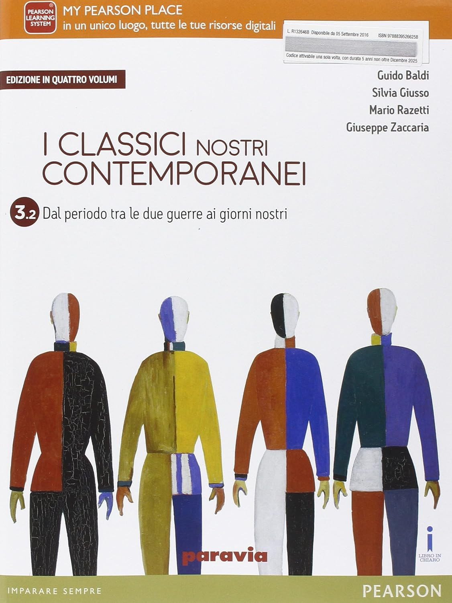

Fonti Utilizzate
Le seguenti fonti sono state utilizzate per raccogliere informazioni su Giuseppe Ungaretti:
Wikipedia: Giuseppe Ungaretti
Libro di testo di italiano: I CLASSICI NOSTRI CONTEMPORANEI
